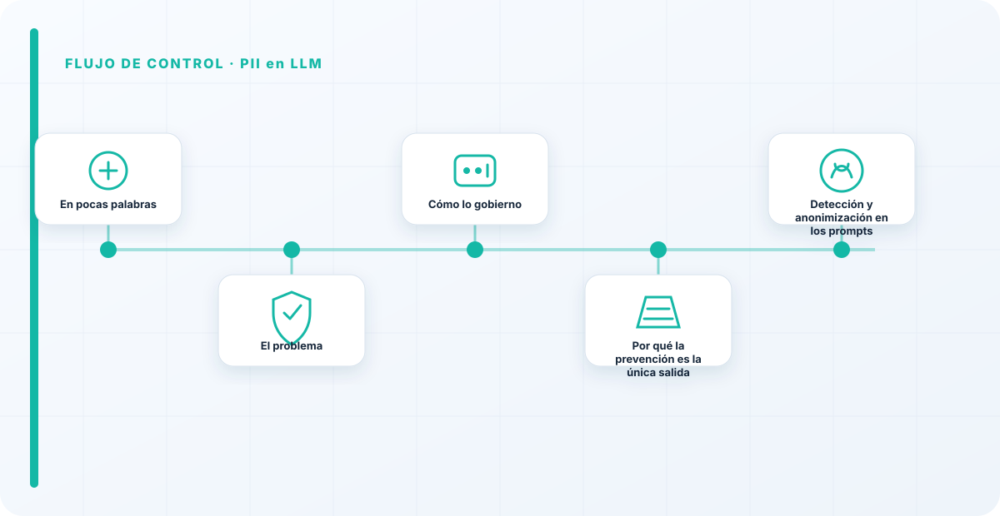
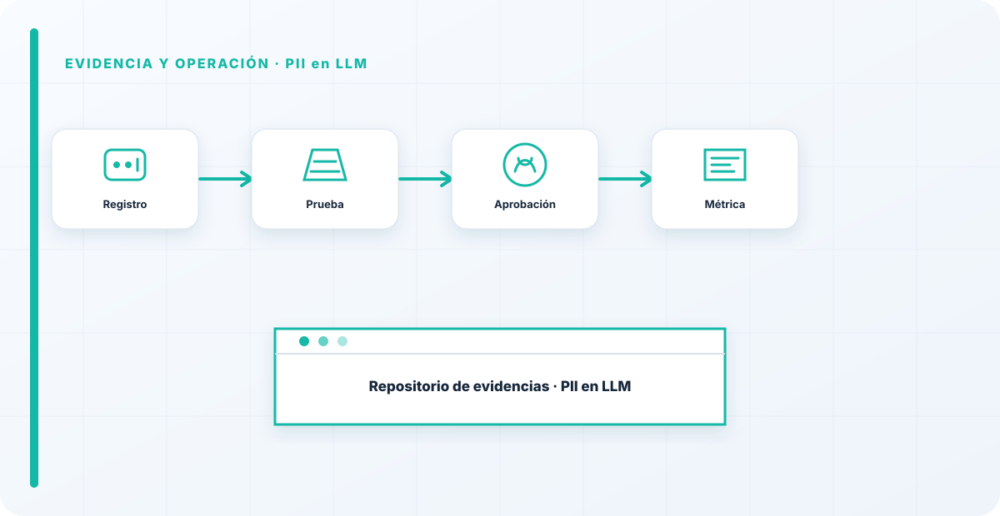

En pocas palabras
Meter datos personales en un LLM es fácil; sacarlos, o borrarlos, es el problema difícil que casi nadie planifica. Los datos personales pueden acabar en un modelo por el entrenamiento o por los prompts del día a día, y una vez dentro, ejercer un derecho de supresión es endiabladamente difícil. La protección de datos aplica igual que en cualquier tratamiento, aunque haya un modelo de por medio.
El problema
Un LLM puede acabar con datos personales por dos vías: en el entrenamiento, o pegados en los prompts cotidianos por usuarios que quieren ir más rápido. Y aquí viene lo difícil: si esos datos quedaron en el modelo, un "borre mis datos" no se resuelve apretando un botón, porque el modelo no "olvida" a demanda como una base de datos.
Ese choque entre un derecho legal —la supresión— y una realidad técnica —los modelos no se desentrenan fácilmente— es el corazón del problema, y por eso hay que atacarlo antes de que el dato entre.
Cómo lo gobierno
La regla de oro es minimizar: que la PII no entre si no hace falta. Donde haga falta, detección y anonimización en los prompts, control estricto de qué se registra, y una respuesta pensada de antemano para los derechos de las personas. Enlaza con la retención, porque los logs de prompts son un depósito de datos personales que crece solo.
La prevención es la única estrategia que funciona de verdad, porque las demás dependen de poder deshacer algo que técnicamente casi no se puede deshacer.

Por qué la prevención es la única salida
El derecho al olvido choca de frente con cómo funciona un modelo: lo que entró en el entrenamiento no se elimina limpiamente. Por eso la única estrategia fiable es que la PII no entre salvo que sea imprescindible. Confiar en poder borrarla después es confiar en una capacidad que, con la tecnología actual, apenas existe.
Esto cambia el enfoque: en vez de "¿cómo borro los datos personales del modelo?", la pregunta correcta es "¿cómo evito que entren datos personales que no necesito?". La segunda tiene respuesta; la primera, casi no.
Detección y anonimización en los prompts
Como la vía más común por la que entra PII no es el entrenamiento sino los prompts del día a día, ahí pongo un control práctico: detectar y anonimizar datos personales antes de que lleguen al modelo y antes de que se registren en los logs. No es perfecto, pero reduce muchísimo la cantidad de PII que acaba donde no debe, sin depender de que cada usuario recuerde no pegar datos sensibles.
Es un control de minimización automática: si el dato personal no hace falta para la tarea, se enmascara antes de entrar. Combinado con formar a la gente en no pegar lo que no toca, cubre las dos vías —la humana y la técnica— por las que la PII se cuela.
El derecho al olvido choca de frente con cómo funciona un modelo: lo que entró en el entrenamiento no se "borra" apretando un botón. Por eso la única estrategia que funciona de verdad es la prevención: que la PII no entre salvo que sea imprescindible. Confiar en poder borrarla después es confiar en algo que técnicamente casi no existe.
Los errores que veo una y otra vez
- Meter PII en prompts o entrenamiento sin necesidad.
- No tener plan para los derechos de supresión.
- Registrar prompts con datos personales sin control.
- Asumir que se puede "desentrenar" a demanda.
- No minimizar antes de que el dato entre.
Cómo lo llevaría a un entorno real
Cuando aterrizo pii en llm en una organización, no empiezo por comprar una herramienta ni por redactar veinte páginas. Empiezo por dibujar qué ocurre hoy: quién solicita el cambio, quién lo aprueba, qué sistemas intervienen, qué datos cruzan el proceso y quién se entera cuando algo falla. Ese dibujo suele descubrir más problemas que cualquier checklist. En gobierno del dato, lo peligroso no es solo carecer de controles; también lo es creer que existen porque alguien los escribió una vez.
Después separo lo imprescindible de lo deseable. Lo imprescindible debe poder comprobarse: un responsable identificado, una regla clara, una evidencia fechada y un mecanismo para reaccionar. En este caso revisaría especialmente sistema de IA, responsable y control. No me vale una respuesta del tipo «lo gestiona el proveedor» o «eso lo mira seguridad». Necesito saber qué persona toma la decisión, con qué información y dentro de qué plazo.
La implantación debe crecer con el riesgo. Un piloto interno puede funcionar con una ficha breve y una revisión manual. Un sistema que afecta a clientes, empleados, dinero o información sensible necesita segregación de funciones, pruebas independientes, monitorización y un expediente mantenido. Mi criterio es sencillo: cuanto más difícil sea deshacer el daño, más fuerte debe ser la barrera antes de producción.
Decisiones que deben quedar por escrito
Hay decisiones que no deberían vivir en una reunión ni en un mensaje de chat. Para pii en llm dejaría documentados el alcance, los supuestos, los límites de uso, las excepciones aceptadas y las condiciones que obligan a detener o reevaluar. El documento no tiene que ser enorme, pero sí debe permitir que otra persona entienda por qué se hizo lo que se hizo.
También registraría quién puede cambiar evidencia, quién valida sistema de IA y quién recibe las alertas relacionadas con responsable. Cuando esas tres responsabilidades se mezclan, aparece el clásico problema: el mismo equipo construye, aprueba y declara que todo funciona. No siempre se puede separar por completo, sobre todo en organizaciones pequeñas, pero al menos debe existir una revisión por alguien que no dependa del éxito inmediato del despliegue.
Las excepciones merecen un tratamiento propio. Una excepción sin fecha de caducidad acaba convirtiéndose en la arquitectura real. Por eso exigiría motivo, riesgo aceptado, responsable, compensaciones, fecha de revisión y criterio de cierre. Si falta uno de esos elementos, no es una excepción gestionada; es una deuda invisible.

Un ejemplo práctico
Imaginemos que un equipo quiere incorporar pii en llm a un servicio que ya está en producción. La propuesta promete reducir tiempos y automatizar tareas, pero utiliza componentes que cambian con frecuencia. Antes de aprobarlo, pediría una prueba limitada, un inventario de dependencias, un flujo de datos y una definición clara de qué acciones quedan fuera del alcance.
Durante la prueba recogería resultados normales y casos límite. No solo miraría si funciona; comprobaría qué ocurre cuando faltan datos, cambia una versión, se pierde conectividad, llega una entrada manipulada o un usuario intenta superar sus permisos. Ahí es donde se ve si el diseño aguanta. En muchas pruebas felices todo parece seguro porque nadie ha intentado romper la hipótesis de partida.
Si los resultados son aceptables, la salida a producción tendría condiciones: versión fijada, configuración aprobada, logs disponibles, responsables de guardia, procedimiento de rollback y revisión tras las primeras semanas. Si alguno de esos elementos no existe, prefiero retrasar el despliegue. Un día de demora suele ser más barato que investigar después un comportamiento que nadie puede reconstruir.
Qué evidencias guardaría
Para demostrar que el control funciona conservaría evidencias que cuenten una historia completa, no capturas sueltas. La historia debe enlazar necesidad, decisión, implementación, prueba y operación. En pii en llm eso incluye como mínimo la ficha del activo, el diagrama vigente, la configuración aprobada, el resultado de las pruebas y el registro de cambios.
No guardaría información por acumular. Si los logs contienen prompts, documentos, datos personales o secretos, aplicaría minimización, control de acceso y retención. La evidencia debe ayudar a investigar y auditar sin crear una segunda fuga de información. Es frecuente endurecer el sistema principal y dejar un repositorio de evidencias abierto a demasiadas personas.
- Propietario y finalidad de pii en llm, con fecha de revisión.
- Inventario de sistema de IA, responsable y dependencias asociadas.
- Criterios de aceptación y resultados sobre control y evidencia.
- Configuración efectiva, versión y aprobación del cambio.
- Alertas, incidentes, excepciones y acciones correctivas cerradas.
Señales de que el control no está funcionando
El primer síntoma es que nadie sabe responder con rapidez quién es el responsable. El segundo es que la documentación describe una versión distinta de la que está operando. El tercero es que las alertas existen, pero llegan a un buzón que nadie revisa. Cuando aparecen esos tres síntomas, el problema no es tecnológico: el control se ha desconectado de la operación.
También desconfío de las métricas demasiado perfectas. Cero incidentes, cero excepciones y cien por cien de cumplimiento pueden significar excelencia, pero con frecuencia significan que no estamos mirando. Prefiero indicadores que enseñen tendencia: tiempo de corrección, antigüedad de excepciones, cobertura de pruebas, cambios sin revisión y reincidencias.
Por último, revisaría el comportamiento después de cada cambio significativo. En IA, una actualización de modelo, dataset, prompt, herramienta, permiso o proveedor puede alterar el riesgo sin cambiar el nombre del servicio. Si el proceso solo reevalúa cuando se crea un proyecto nuevo, se quedará ciego durante la mayor parte de la vida útil.
Mi criterio de cierre
Considero que pii en llm está razonablemente controlado cuando el equipo puede explicar el proceso sin depender de una sola persona, reconstruir una decisión con evidencias y detener el servicio sin improvisar. No busco perfección documental; busco que la organización pueda tomar decisiones repetibles bajo presión.
El cierre no consiste en marcar todas las casillas. Consiste en demostrar que los riesgos relevantes tienen propietario, que los controles se prueban y que las desviaciones producen una acción. Si la evidencia no cambia ninguna decisión, probablemente estamos generando burocracia. Si una decisión importante no deja evidencia, estamos creando fragilidad.
Este enfoque es el que intento mantener en toda CyberLibrary AI: explicar el control de forma que lo entienda negocio, pero con suficiente profundidad para que arquitectura, seguridad, auditoría y operaciones puedan aplicarlo de verdad.
Referencias y marcos relacionados
Contenido educativo y técnico. No sustituye asesoramiento jurídico ni una auditoría formal.